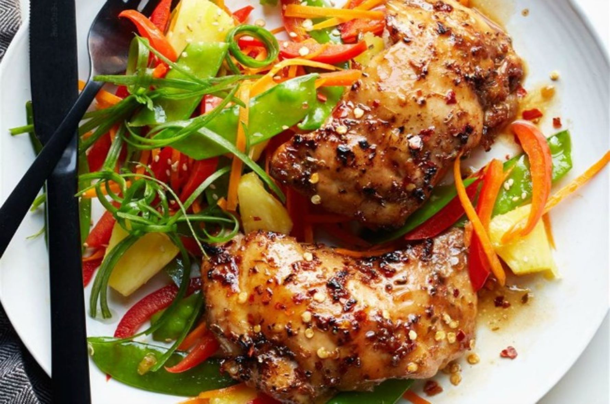

Shoyu Chicken Recipe
Ingredients
- 1 cup soy sauce
- 1 cup brown sugar
- 1 cup water
- 4 cloves garlic, minced
- 1 onion, chopped
- 1 tablespoon grated fresh ginger root
- 1 tablespoon ground black pepper
- 1 tablespoon dried oregano
- 1 teaspoon crushed red pepper flakes (Optional)
- 1 teaspoon ground cayenne pepper (Optional)
- 1 teaspoon ground paprika (Optional)
- 5 pounds skinless chicken thighs
Directions
- Step 1: Whisk together the soy sauce, brown sugar, water, garlic, onion, ginger, black pepper, oregano, red pepper flakes, cayenne pepper, and paprika in a large glass or ceramic bowl. Add the chicken thighs, and toss to evenly coat. Cover the bowl with plastic wrap, and marinate the chicken in the refrigerator for at least 1 hour.
- Step 2: Preheat an outdoor grill for medium heat, and lightly oil the grate.
- Step 3: Remove the chicken thighs from the marinade. Discard the remaining marinade. Grill the chicken thighs on the preheated grill until cooked through, about 15 minutes per side.
Nutrition Facts
- Per Serving: 338 calories
- protein 33.4g
- carbohydrates 21.7g
- fat 12.6g
- cholesterol 114mg
- sodium 1304.3mg